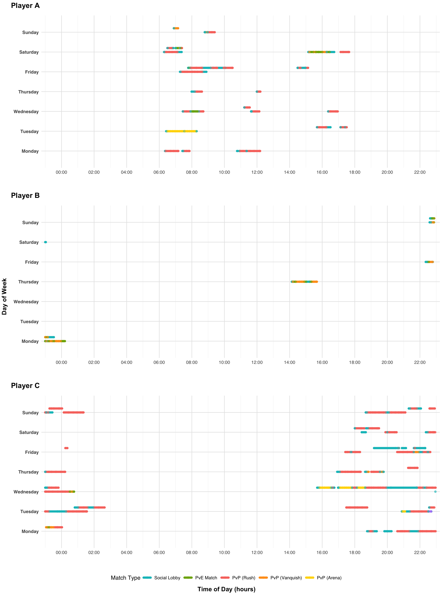
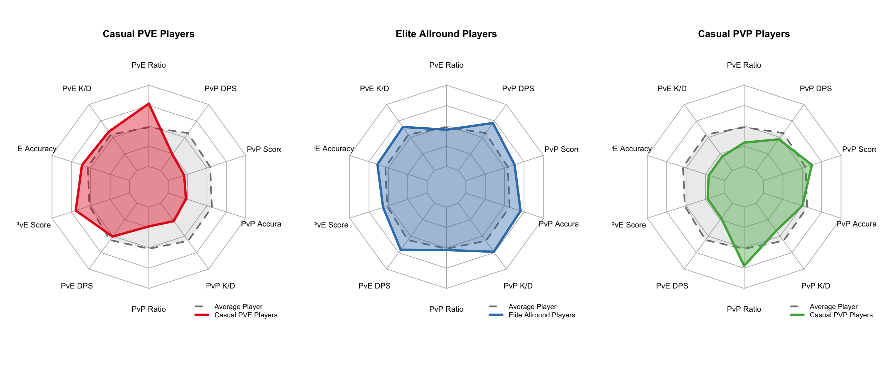
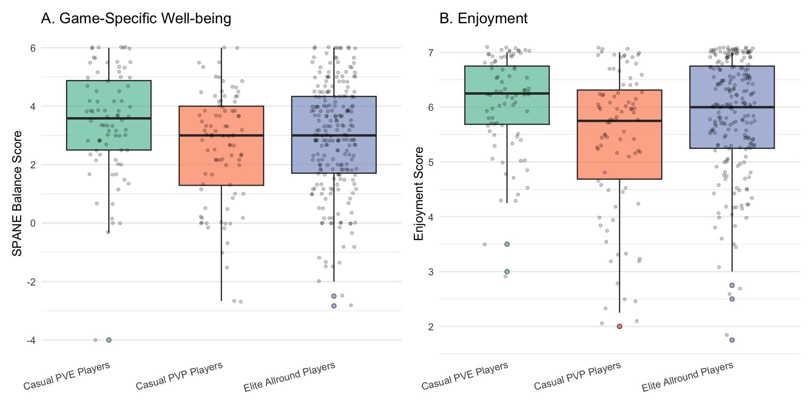
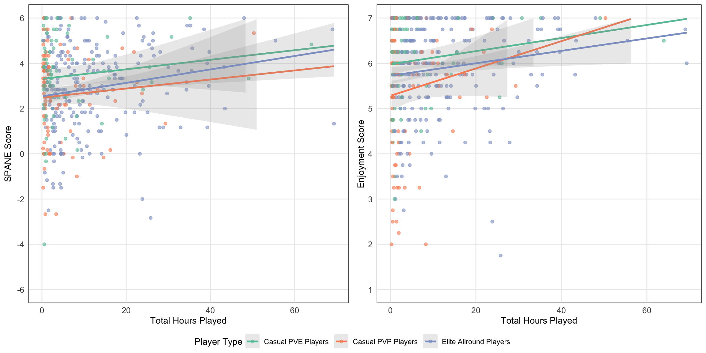
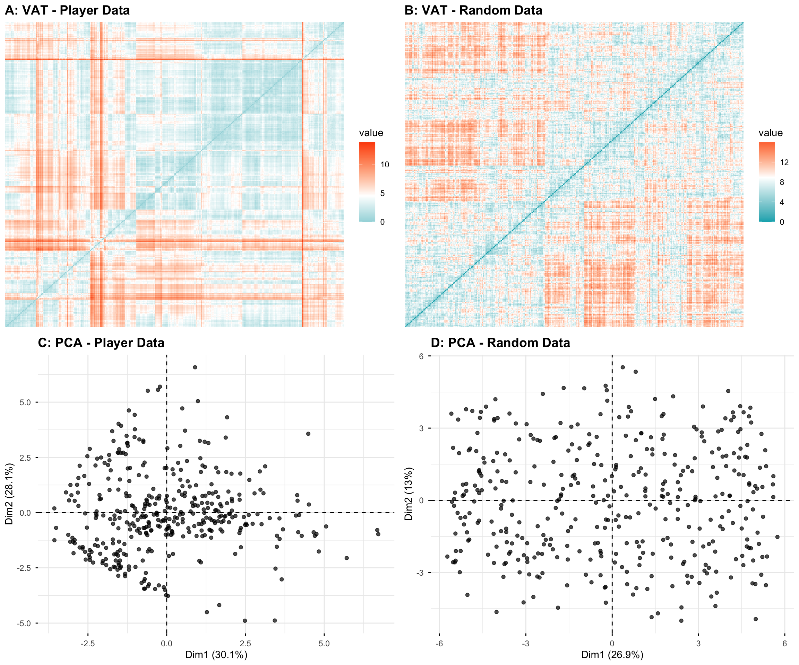
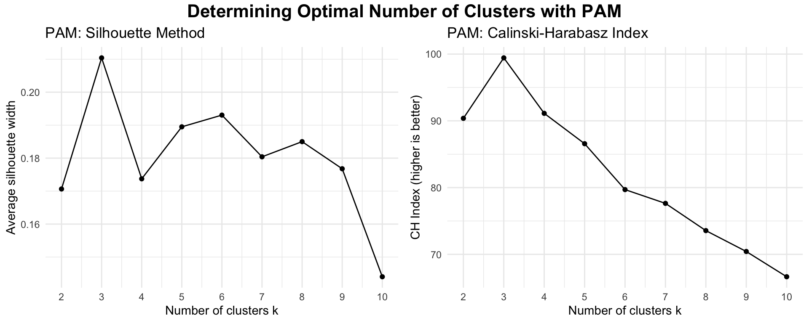

![]()

Not All Play is Equal: In-game Player Behaviour Predicts Wellbeing Differences
video games
playing style
well-being
performance
telemetry
Abstract
Large-scale studies using digital trace data consistently find that playtime alone is not meaningfully associated with wellbeing, suggesting that the quality of play may matter more than the quantity. Yet these studies typically capture playtime across platforms and titles without examining what happens inside the game, the granular in-game behaviours that might differentiate players’ experiences. The Integrated Model of Player Experience (IMP) posits that the mechanics and contexts players encounter during play shape the resulting experience and its downstream psychological effects, implying that players who engage with the same game in qualitatively different ways may report different wellbeing outcomes. We tested this using telemetry-driven profiling of session-level behavioural data from 413 players of the online shooter Plants vs. Zombies: Battle for Neighborville. Cluster analysis on 10 standardised performance and mode-preference metrics identified three distinct playstyles characterised by cooperative, high-performing generalist, and competitive playstyles. Players clustered as cooperative-focused reported greater wellbeing and enjoyment than competition-focused players. However, we found no evidence that playstyle moderated the relationship between playtime and either outcome. These findings indicate that how players engage with a game’s mechanics and modes is associated with different average levels of wellbeing, but does not appear to alter the relationship between the amount of play and wellbeing. We discuss implications for moving beyond playtime-centric approaches toward in-game behavioural methods for understanding games and wellbeing.
Introduction
The debate about whether video games harm or improve wellbeing has persisted for decades, yet empirical findings remain mixed, constantly changing with the methods used to study them. Earlier studies relying on players’ retrospective estimates of their own playtime and behaviour produced contradictory findings. Several studies reported negative associations between self-reported playtime and measures of mental health or wellbeing (Ferguson & Colwell, 2019; Liu et al., 2019; Mathur & VanderWeele, 2019), with some reporting negative associations only among highly engaged players (Colder Carras et al., 2017; Przybylski & Weinstein, 2017). Whilst others found positive associations (Halbrook et al., 2019; Villani et al., 2018), with some reporting those only for moderate usage (Przybylski & Weinstein, 2017) or specific game genres such as MMOs (Raith et al., 2021). To overcome the well-documented inaccuracy of self-reported measures (Johannes et al., 2021; Parry et al., 2021), later work utilised large-scale digital trace data (i.e., objective behavioural logs collected directly from game platforms). These studies demonstrated that, for most players, the overall associations between the average player’s quantity of playtime and their wellbeing are small and unlikely to be practically meaningful (Ballou, Földes, et al., 2025; Egami et al., 2024; Johannes et al., 2021; Larrieu et al., 2023; Vuorre et al., 2022).
These null results do not imply that playing video games is irrelevant to wellbeing. Rather, they suggest that the most measured dimension of play, its quantity, might not be the determining factor. Large-scale analysis of adult Nintendo players corroborated this, whilst they found that playtime was not meaningfully related to multiple wellbeing indicators, it did show that players’ subjective evaluations of gaming’s life-fit were (Ballou, Vuorre, et al., 2025). The underlying problem is that, conceptually, there is no such thing as ‘video game play’, but only exposures such as ‘playing with friends’, ‘playing competitively’, ‘succeeding or failing at the game’s mechanics’, or ‘playing to alleviate study-related stress’. That is, playtime consists of heterogeneous exposures, including context-centered exposures (e.g., when and with whom one plays), game-centered exposures (e.g., game modes, mechanics, and business models), and player-centered exposures (e.g., playstyles, motivations, and player experience) (Ballou, Hakman, et al., 2025). When studies collapse these layers into a single playtime variable, they conflate qualitatively distinct exposures and risk both theoretical ambiguity and empirical inconsistency (Ballou, Hakman, et al., 2025).
This highlights a crucial gap: while existing digital trace research is a mile wide, it is only an inch deep. They capture playtime across platforms and titles, but not what happens inside the game, the granular in-game behaviours and experiences that might explain why some players benefit from play while others do not. Thus, to reconcile the mixed historical findings with the contemporary null results, research needs to start modelling the quality of play with in-game digital trace data because quantity alone is insufficient; two players can accumulate the same playtime yet have markedly different player experiences. While this makes intuitive sense, how researchers can study in-game player experience empirically without reverting to subjective self-reports remains an open question.
One theoretically grounded operationalisation comes from the Integrated Model of Player experience [IMP; Elson et al. (2014)], which identifies three categories of game characteristics that shape the playing experience: narrative (story and setting), mechanics (rules, interaction demands, and feedback), and context (the social and situational embedding). Where user-centric theories such as self-determination theory (Ryan et al., 2006) and uses and gratifications (Ruggiero, 2000) focus primarily on motivations and player states, the IMP is game-centric and focuses on how interaction with specific in-game characteristics during play alters the play experience and subsequent wellbeing outcomes (Elson et al., 2014). In this sense, the IMP opens the “black box” of in-game behaviour by connecting the game characteristics players encounter during play to the outcomes that follow from it, thereby guiding empirically testable hypotheses about these relationships (Elson et al., 2014). Crucially, the IMP positions mechanics as the foundational element of player experience; without mechanics there is no play, whereas narrative and context contribute situationally. A conceptually meaningful operationalisation of play quality should therefore incorporate digital trace data on mechanics-relevant indicators (e.g., performance metrics), contextual indicators (e.g., mode selection), and narrative indicators (e.g., dialogue engagement) where appropriate.
Within game analytics research, this process is known as telemetry-driven profiling, where collections of in-game behaviours, events, and experiences are condensed into behavioural profiles, or playstyles, that describe how players engaged with a game during the measurement period (Drachen et al., 2014; Ravari et al., 2022). Playstyles are distinct from player types. Player types refer to stable individual characteristics assessed via self-reports, as in Bartle’s taxonomy (Bartle, 1996), which categorizes players as Achievers, Explorers, Socializers, or Killers based on their preferences for achievement versus exploration and interaction with the game world versus other players; Yee’s motivation model (Yee, 2006), which identifies three primary components of player motivation (i.e., achievement, social, and immersion); and the Hexad framework (Tondello et al., 2016), which proposes six gamification user types grounded in self-determination theory. The utility of such typologies has, however, been called into question by recent evidence of their temporal instability. Santos et al. (2023) found that 72% of participants changed their player type classification over six months, suggesting that self-reported types may not reliably reflect actual in-game behaviour.
In contrast, telemetry-derived playstyles capture emergent behavioural patterns as they occur, providing a more ecologically valid representation of how players engage with games. As such, playstyles offer a quantifiable, data-driven way to characterise how players pursue a game’s objectives (Sifa et al., 2018). Previous work has used telemetry-driven profiling to examine the relationship between playstyles and personality (Bean & Groth-Marnat, 2016; van Lankveld et al., 2011), motivation (Melhart et al., 2019; Yee, 2016), national culture (Ravari et al., 2022), and individual and team performance (Jiang et al., 2021). However, whether and how playstyles relate to wellbeing and enjoyment has remained untested, in large part because datasets combining granular session-level behavioural telemetry with validated measures of mental health are exceedingly rare (Norwood et al., 2026).
The present study addresses this question by leveraging one such rare dataset, collected through an industry-academia collaboration (Johannes et al., 2021). We address three research questions. First, can distinct playstyles be identified from in-game behavioural telemetry within a single game title? Second, do players with different playstyles report different levels of game-specific well-being or enjoyment? Third, does the association between playtime and well-being or enjoyment differ between playstyles?
Methods
In this study, we analysed data reported in Johannes et al. (2021), who collected digital trace data and survey responses of 518 Plants versus Zombies: Battle for Neighbourville players.
Plants versus Zombies: Battle for Neighbourville
Plants versus Zombies: Battle for Neighbourville (PvZ) is an online multiplayer First-person shooter (FPS) game released by Electronic Arts (EA) in October 2019. The gameplay is third-person, with an emphasis on shooter-style combat and exploration. Players can play 23 customizable gameplay classes that each have unique weapons, abilities, and forms of movement. The game offers the players the ability to compete against each other in various competitive Player-versus-Player (PVP) modes, including objective-based matches, team deathmatches, 2v2 arena matches, etc. The game also features several Player-versus-Environment (PVE) open zones, which feature storylines with quests and allow players to explore, find collectables, and complete side-missions. Players can earn experience points and in-game currencies, using the former to indicate progression and the latter to upgrade and buy new characters. The game was played on PC, PS4, Xbox One, and Nintendo Switch (Electronic Arts (2019)).
Participants
As detailed in Johannes et al. (2021), participants were recruited by Electronic Arts directly from their active player base via email invitations sent in two waves: the first in early August 2020 to 50,000 players, and the second in late September 2020 to 200,000 players. In total, 518 PvZ players completed the well-being survey (approximately 0.21% response rate). For details on the full dataset, which also includes Animal Crossing: New Horizons players, see Johannes et al. (2021). Because our research questions concern mechanics-based playstyles, we applied several inclusion criteria to ensure the analytic sample consisted of players who actively engaged with the game’s core mechanics. We first excluded participants without matching telemetry data (n = 48). We then excluded 57 participants whose telemetry contained no performance metrics across any activity (PvP or PvE). These players spent time in the game’s social hub, an idle space for navigation and character customisation, but did not participate in any gameplay, and thus had no behavioural data from which to derive playstyle profiles. Social-hub-only players differed markedly from combat-active players in engagement: they logged substantially less playtime (Mdn = 0.12 vs. 4.82 hours; Mann–Whitney U = 1,156, p < .001) and fewer sessions (Mdn = 1 vs. 28; U = 589, p < .001), though survey response quality did not differ between groups (straightlining rates: 1.8% vs. 1.5%, χ² = 0, p = 1.0). The final analytic sample consisted of 412 combat-active players (M age = 35, SD = 11.8; 318 male, 81 female, 1 other, 12 undisclosed), representing 79.5% of the original 518 respondents. Following the methodology from the original paper, values more than 6 standard deviations from a variable mean were replaced with NA on a case-by-case basis (Johannes et al. (2021)). In this dataset, this procedure replaced 87 values (across 48 variables; 26 participants affected) and did not reduce the final analytic sample. The final analytic sample consisted of 412 combat-active players (M age = 35, SD = 11.8; 318 male, 81 female, 1 other, 12 undisclosed), representing 79.5% of the original 518 respondents.
Measures
Playtime
The first measure afforded by these digital trace data is playtime, yet determining this is already complex. Simply measuring the total time an account has been online does not distinguish between active and idle time. Idle time is when the player’s account is online but not actively engaging with the objectives or mechanics of the game. Idle time can happen when a player’s computer is logged onto their account, but they are away from the keyboard. Other forms of idle time are spending time in home screens, customization menus, lobbies, and social spaces. In this study, active playtime was calculated by aggregating session data. Sessions represent the different levels, game modes, or worlds a player can be present in. Every player is always in a session and could only be in one session at a time, however, multiple players could be in the same session. For example, when a player launches PvZ, they enter the hub world (where they can select what type of level or mode to play), entering the hub world starts the session timer, which ends as they choose a level or leave to join a match, which then starts a new session timer for that level. In total, the 412 players in our sample played 36,621 sessions, of which 25,937 happened in the two weeks prior to a player taking the survey. These sessions took place across 19 different maps that each facilitated different forms of gameplay, such as Player-versus-Player (PvP; 13,594 (51.27%) of sessions), 4,854 (18.31%) Player-versus-Environment (PVE), and 7,489 (28.24%) Social Hub maps. In PvP maps players battle against each other in various competitive modes such as objective-based matches, team deathmatches, and 2v2 arena matches. In PVE maps players explore open worlds that are designed for adventure with story-driven quests, side missions, and hidden collectables. The Social Hub served as an idle space for navigation and customization between matches and was excluded. This left 17,505 total sessions, 12,445 PVP sessions (71.09%) and 4,509 PVE sessions (25.76%). Players had clear preferences for which game mode they chose to play (Figure 1), which already indicated clear differences in playing styles.
Behavioural telemetry
The raw telemetry contained session-based records of game events for each player. From these records, we selected and computed metrics only if they had been previously validated as informative measures of player behaviour and performance in shooter games (Drachen et al., 2012; Lugrin et al., 2013; Melhart et al., 2019). Two principles guided the computation of the behavioural metrics. First, all performance metrics were constructed to be independent of total playtime. Common cumulative indicators such as ‘player level’ or ‘total kills’ were deliberately excluded because they conflate skill with playtime; a player’s level may simply be higher because they played more, not because they performed better. Second, every metric was computed separately for PvP and PvE modes, because the two contexts differ fundamentally in difficulty, objectives, and opponent type; eliminating a computer-controlled enemy in PvE is not comparable to eliminating a matchmade opponent of similar rank in PvP. Pooling across modes would obscure meaningful behavioural differences. This resulted in 12 behavioural metrics plus one overall playtime measure. Mode ratio captured the proportion of active playtime each player devoted to PvP and PvE modes, reflecting game-mode preference. Kill/death ratio indexed combat effectiveness as the number of eliminations per death, with higher values indicating greater survivability and lethality. Hit accuracy measures the proportion of shots that connect with a target, reflecting aiming precision. Damage per second captured sustained offensive output, indicating how efficiently a player dealt damage over time. Average damage per game reflected total offensive contribution within a match, encompassing both direct combat and area-of-effect output. Average score per game provided a composite performance indicator incorporating objectives completed, assists, and other in-game scoring events beyond raw combat. Each of these five performance metrics was computed separately for PvP and PvE, yielding 10 mode-specific indicators alongside the two mode-ratio variables. See Table 1 for descriptive statistics.
| Variable | M | SD | Min | Max |
|---|---|---|---|---|
| N = 412. Gender distribution: Female: 81 [19.7], Male: 318 [77.2], Other: 1 [0.2], Prefer not to say: 12 [2.9] | ||||
| Age | 35.01 | 11.77 | 18 | 99 |
| Total Hours Played | 9.47 | 11.7 | 0.15 | 69.33 |
| Proportion of PvP Playtime | 0.47 | 0.28 | 0 | 1 |
| Proportion of PvE Playtime | 0.25 | 0.24 | 0 | 1 |
| PvP Kill/Death Ratio | 12.76 | 38.16 | 0 | 387.62 |
| PvE Kill/Death Ratio | 55.18 | 88.75 | 0 | 725 |
| PvP Hit Accuracy | 0.27 | 0.12 | 0 | 0.83 |
| PvE Hit Accuracy | 0.4 | 0.13 | 0 | 0.87 |
| PvP Damage per Second | 4.86 | 4.05 | 0 | 24.9 |
| PvE Damage per Second | 11.8 | 12.61 | 0 | 124.62 |
| PvP Average Damage per Game | 2731.45 | 2502.23 | 0 | 15093 |
| PvE Average Damage per Game | 8231.29 | 6501.59 | 0 | 34232.25 |
| PvP Average Score | 1654.94 | 1033.57 | 0 | 5505 |
| PvE Average Score | 2620.9 | 2404.79 | 0 | 20725 |
| Game-Specific Well-being (SPANE) | 2.95 | 1.91 | -4 | 6 |
| Enjoyment | 5.82 | 1.11 | 1.75 | 7 |
Well-being
We assessed affective well-being with the Scale of Positive and Negative Experiences [SPANE; Diener et al. (2010); Diener et al. (2018)]. Respondents were prompted to reflect on how playing PvZ had made them feel over the past two weeks and rated how often they experienced each of six positive (positive, good, pleasant, happy, joyful, contented) and six negative (negative, bad, unpleasant, sad, afraid, angry) feelings on a scale from 1 (Very rarely or never) to 7 (Very often or always). An overall well-being balance score was computed by subtracting the mean negative score from the mean positive score, yielding a possible range of −6 to +6, where higher values indicate more positive affect associated with play. All responses were screened for straightlining (e.g. when respondents give identical answers to all items) to identify records with low data quality commonly found in online surveys (Leiner (2019)), however, no unusual cases were identified.
Enjoyment
Enjoyment was assessed with four items from the Player Experience and Need Satisfaction scale [PENS; Ryan et al. (2006)], validated by Johnson et al. (2018). The full PENS comprises subscales measuring autonomy, competence, relatedness, enjoyment, and extrinsic motivation; we used only the four-item enjoyment subscale, which captures hedonic appreciation of the play experience. Respondents were asked to reflect on their experience playing PvZ over the past two weeks and rated items such as “I think PvZ was fun to play” on a scale from 1 (Strongly disagree) to 7 (Strongly agree).
Data analysis
Data were analyzed in R version 4.5.1 (R Core Team, 2025). Key packages included fpc for cluster validation indices (Hennig, 2020), factoextra for multivariate visualization (Kassambara & Mundt, 2020), and robustlmm for robust mixed-effects estimation (Koller, 2016). Following initial data cleaning, telemetry records were matched to the same two-week window referenced by the survey items, and analyses were conducted on combat-active players with sufficient mode-specific telemetry.
To test whether clustering was appropriate before fitting any cluster model, we evaluated cluster tendency using three complementary approaches. First, we computed the Hopkins statistic (Banerjee & Dave, 2004), which compares distances in observed data to distances expected under spatial randomness; values near 0.5 indicate random structure, whereas larger values indicate clusterable structure. Second, we used Visual Assessment of Cluster Tendency (VAT) (Bezdek & Hathaway, 2002), which reorders the dissimilarity matrix so potential clusters appear as darker diagonal blocks. Third, we examined Principal Component Analysis (PCA) projections to assess whether separable groupings were visible in low-dimensional space relative to random reference data. Together, these diagnostics indicated non-random structure suitable for clustering.
We then identified play styles with Partitioning Around Medoids (PAM) (Kaufman & Rousseeuw, 1990) on standardized in-game behavioral features. PAM was selected over k-means because it is less sensitive to extreme points and defines each cluster by an observed medoid (a real player profile), which improves robustness and interpretability for telemetry-derived behavioral profiles. Features were z-standardized before clustering, and missing mode-specific performance values were set to zero to encode no activity in that mode rather than dropping cases. The number of clusters was determined by maximizing the Calinski-Harabasz index across k = 2 to 10 (Tibshirani et al., 2001), which selected a three-cluster solution; we then checked internal coherence with silhouette widths (Kaufman & Rousseeuw, 1990).
To examine associations between play style, playtime, and outcomes, we fit robust linear mixed-effects models with random intercepts for country to account for baseline between-country differences in outcome levels. For both outcomes (game-specific well-being and enjoyment), we first estimated main-effects models: outcome ~ player type + hours played + gender + age + (1 | country). To address moderation (RQ3), we then estimated interaction models: outcome ~ player type * hours played + (1 | country). Outcomes were treated as continuous and approximately normally distributed, and playtime hours was modeled on its raw scale. We used simple-slopes analyses to estimate within-play-style playtime slopes and pairwise slope-difference tests to compare those slopes across play styles. Statistical significance was set at p < .05.
Data, Materials, and Code
The raw data, materials, codebook and further details on this dataset shared by Johannes et al. (2021) can be found at https://osf.io/cjd6z/. Building on this raw data and documentation, all of the underlying wrangling and analysis code reported in this study can be found at OSF upon publication.
Results
Player Clustering Analysis
Assessing Cluster Tendency
Before fitting cluster models, we evaluated whether the data showed non-random structure. The Hopkins statistic (Banerjee & Dave, 2004) assesses cluster tendency by comparing the observed data structure to what would be expected under spatial randomness. Specifically, it measures the ratio of distances from a sample of data points to their nearest neighbors within the actual dataset, relative to distances from uniformly distributed random points to their nearest neighbors in the actual data. The statistic ranges from 0 to 1, where values near 0.5 indicate spatial randomness (no meaningful cluster structure), values substantially below 0.5 suggest regular spacing, and values substantially above 0.5 indicate clusterable structure. Values above 0.70 are generally considered strong evidence of cluster tendency, with higher values reflecting more pronounced separation between natural groupings in the feature space.
The Hopkins statistic computed from our player behavioral data was high (0.8844, 95% CI [0.8443, 0.9245]), substantially exceeding the 0.70 threshold and indicating strong cluster tendency. As a validity check, a random dataset with identical dimensions produced a substantially lower value (0.6256) closer to the 0.5 benchmark expected under spatial randomness. VAT plots showed clear dark diagonal blocks for the player data, consistent with separable groups, while the random reference data showed no comparable block structure (Appendix 1; Bezdek & Hathaway (2002)). PCA visualizations converged on the same conclusion, with visible grouping in the player data but not in the random comparison. The convergence of these three independent assessments (Hopkins, VAT, and PCA) provided strong statistical evidence to reject the null hypothesis of spatial randomness, demonstrating that the player behavioral data contained meaningful, non-random structure amenable to clustering methods.
Determining Optimal Number of Clusters
To select the number of clusters, we evaluated PAM solutions for k = 2 to 10 using the Calinski-Harabasz (CH) index, where higher values indicate better separation relative to within-cluster dispersion (Kaufman & Rousseeuw, 1990; Tibshirani et al., 2001). The CH index peaked at k = 3 (Appendix 2), supporting a three-cluster solution as the best trade-off between fit and parsimony. This solution also yielded interpretable profiles consistent with prior telemetry-based playstyle research (Drachen et al., 2012; Drachen et al., 2014; Melhart et al., 2019).
PAM Clustering
Having selected k = 3 on the basis of the CH index, we assessed the internal validity of this solution using silhouette analysis (Kaufman & Rousseeuw, 1990), which quantifies how well each observation fits its assigned cluster relative to the nearest neighbouring cluster. The average silhouette width was 0.22. According to Kaufman and Rousseeuw’s interpretive guidelines, values above 0.25 indicate strong structure and values between 0.10 and 0.25 indicate weak but still meaningful structure; the overall value thus falls at the boundary, suggesting reasonable though not crisp separation. Per-cluster silhouette widths ranged from 0.15 to 0.39, with one cluster exceeding the 0.25 threshold and the remaining two showing acceptable cohesion. No negative silhouette values were observed, confirming that every observation was assigned to its most appropriate cluster. The substantive interpretation of these three clusters is presented below.
Interpretation of Playstyles
Following established approaches to telemetry-based player profiling (Bauckhage et al., 2015; Drachen et al., 2012; Drachen et al., 2014; Melhart et al., 2019; Sifa et al., 2018), we labelled the three clusters on the basis of their dominant mode preferences and performance levels (Figure 2). The labels reflect two dimensions that emerged from the data: the game mode players predominantly engaged with (PVE vs. PVP) and their overall performance level (casual vs. elite).
Casual PVE Players (19.9% of the sample) allocated the majority of their playtime to cooperative PVE modes (58.6%), achieving moderate performance within that context (PVE K/D: M = 63.59; PVE Accuracy: M = 40.2%) while showing markedly lower metrics in PVP. This profile suggests a specialisation in story-driven exploration and cooperative play over competitive engagement.
Elite Allround Players (58% of the sample), the largest cluster, maintained high performance across both gameplay contexts, with kill-to-death ratios and accuracy rates substantially above the sample mean in both PVP (K/D: M = 17.19; Accuracy: M = 31.5%) and PVE (K/D: M = 71.91; Accuracy: M = 42%). Rather than specialising in one mode, these players engaged broadly and performed well regardless of context, distinguishing them as the most proficient segment.
Casual PVP Players (22.1% of the sample) devoted the majority of their time to competitive PVP modes (70.7%), yet their performance was moderate (PVP K/D: M = 7.79; PVP Accuracy: M = 21.8%), falling well below Elite Allround Players. Performance in PVE was similarly modest. This pattern indicates a preference for competitive engagement that is not accompanied by correspondingly high skill, suggesting a casual orientation to play within a competitive context.

Well-being differences between player types
We fitted robust linear mixed-effects models predicting each outcome from player type, hours played, gender, and age, with random intercepts for country (Appendix 3). Casual PVE Players served as the reference category. Relative to these players, both Casual PVP Players (b = -0.91, SE = 0.29, t = -3.11) and Elite Allround Players (b = -0.89, SE = 0.25, t = -3.55) reported significantly lower game-specific well-being. For enjoyment, Casual PVP Players again scored lower than Casual PVE Players (b = -0.47, SE = 0.16, t = -2.93), whereas the difference between Elite Allround and Casual PVE Players was smaller and not statistically reliable (b = -0.28, SE = 0.14, t = -2.05). Hours played was positively associated with both outcomes (well-being: b = 0.03, SE = 0.01, t = 3.08; enjoyment: b = 0.01, SE = 0, t = 3.1).
Does Playstyle Moderate the Playtime–Well-being Relationship?
To test whether the playtime–outcome association differed across playstyles, we added player type × hours interaction terms to the models (Appendix 4). Each interaction coefficient represents the difference in the playtime slope for a given playstyle relative to Casual PVE Players. None of the interaction terms reached significance: for well-being, neither Casual PVP Players (Δb = -0.01, SE = 0.03, t = -0.25) nor Elite Allround Players (Δb = 0, SE = 0.02, t = 0.09) had a playtime slope that differed from the reference group. The same held for enjoyment (Casual PVP: Δb = 0.02, SE = 0.02, t = 0.86; Elite Allround: Δb = 0, SE = 0.01, t = 0.21). Baseline playstyle differences in intercepts remained in the interaction models, particularly for Casual PVP Players (well-being: b = -0.92, t = -2.68; enjoyment: b = -0.58, t = -3.16).

These playstyle differences were corroborated by one-way ANOVAs (well-being: F(2, 409) = 5.96, p = 0.003, η² = 0.028; enjoyment: F(2, 409) = 9.48, p < .001, η² = 0.044) and Tukey HSD post-hoc tests, which confirmed that Casual PVP Players scored lower than Casual PVE Players on both well-being (p = 0.002) and enjoyment (p < .001), and lower than Elite Allround Players on enjoyment (p = 0.001) (Figure 3).

To further probe the interaction, simple slopes analyses decomposed the playtime–outcome association within each playstyle (Figure 4). Only Elite Allround Players showed a significant positive slope for both well-being (b = 0.029, p = 0.006) and enjoyment (b = 0.014, p = 0.013). Slopes for Casual PVE Players (well-being: b = 0.027, p = 0.167; enjoyment: b = 0.011, p = 0.268) and Casual PVP Players (well-being: b = 0.018, p = 0.501; enjoyment: b = 0.027, p = 0.066) were not significant. Critically, pairwise comparisons of slopes revealed no significant differences between any pair of playstyles (all ps > .05), confirming that the playtime–outcome gradient does not differ meaningfully across groups. Taken together, these results indicate that playstyle is associated with different baseline levels of well-being and enjoyment but does not moderate the relationship between playtime and either outcome.
Discussion
This study addressed three research questions: whether distinct playstyles can be identified from in-game behavioural telemetry within a single game, whether players with different playstyles report different levels of wellbeing and enjoyment, and whether the association between playtime and these outcomes differs across playstyles. The findings support the first two propositions but not the third. Three distinct playstyles were identified from behavioural telemetry, and these playstyles were associated with meaningful differences in wellbeing and enjoyment. However, we found no evidence that playstyle moderated the playtime–outcome relationship.
The three playstyles identified through PAM clustering (Casual PVE Players, Elite Allround Players, and Casual PVP Players) are conceptually consistent with player segments previously identified in other shooter titles. Drachen et al. (2012) identified player types in Battlefield 2: Bad Company 2 that parallel our casual and elite profiles, whilst Melhart et al. (2019) found comparable segments in Tom Clancy’s The Division, including PVE-focused and competitively skilled players. The recurrence of these patterns across different games suggests that such typologies may capture fundamental approaches to gameplay rather than game-specific idiosyncrasies. This finding directly supports the heterogeneous exposures framework (Ballou, Hakman, et al., 2025): even within a single title, players encounter qualitively different game-centred exposures depending on the modes they select and the mechanics they engage with.
However, it remains an open question whether playstyles themselves show temporal stability or represent dynamic adaptations to changing contexts. Unlike player types, which are theorised as relatively stable individual differences yet demonstrate considerable instability (Santos et al., 2023), playstyles may be better conceptualised as characteristic behavioural patterns that emerge from the interaction between player, game, and context. This framing accommodates the possibility that players’ behavioural patterns might shift with skill development, game progression, life circumstances, or wellbeing states, whilst still providing meaningful characterisations of gameplay within specific periods and contexts.
Our robust mixed-effects models and complementary ANOVAs converged on a consistent pattern: Casual PVE Players reported higher game-specific wellbeing and enjoyment than Casual PVP Players, while Elite Allround Players fell between the two groups on enjoyment but were also lower than Casual PVE Players on wellbeing. These baseline differences indicate that different styles of engagement with the same game are associated with different psychological experiences, even after controlling for playtime, age, and gender.
The higher wellbeing among Casual PVE Players is noteworthy given that Elite Allround Players demonstrated substantially higher performance metrics across all modes. If competence alone drove wellbeing, the most skilled players should report the most positive experiences. Prior work does suggest that competence satisfaction positively predicts wellbeing in gaming contexts (Klimmt et al., 2009; Przybylski et al., 2010; Ryan & Deci, 2001; Tamborini et al., 2011). However, our findings suggest that the context in which competence is exercised matters as well, consistent with the IMP’s emphasis on both mechanics and context as jointly shaping player experience (Elson et al., 2014). Cooperative PVE environments may afford a subjective experience that is more exploratory than competitive PVP modes, potentially increasing perceived autonomy over how to engage with game content. This interpretation is speculative and requires direct measurement of need satisfaction across playstyles in future work, but it aligns with the broader pattern that how players engage with a game is more informative for average wellbeing than how much they play.
Contrary to our expectations, we found no evidence that playstyle moderates the association between playtime and wellbeing or enjoyment. Interaction terms were consistently non-significant, and pairwise comparisons of simple slopes confirmed that the playtime gradient did not differ across playstyles. Although Elite Allround Players showed the only significant positive simple slope, this did not translate into a significant difference from the slopes of other groups.
This null finding has important implications for the playtime debate. Recent large-scale digital trace studies have established that playtime alone is not meaningfully associated with wellbeing for most players (Ballou, Földes, et al., 2025; Johannes et al., 2021; Vuorre et al., 2022). One plausible explanation for these aggregate null findings is that playtime effects are heterogeneous, positive for some styles of play, negative for others, and averaging to near-zero overall. Our results do not support this explanation; the playtime–wellbeing slope was consistently small and did not vary by playstyle. The present data therefore cannot be used to argue that the playtime paradigm is inadequate because it overlooks differential playtime effects across player types.
Perhaps the more parsimonious interpretation is simply that playtime is not a meaningful determinant of wellbeing in the first place, not because the relationship is masked by heterogeneity, but because time spent playing is too blunt a measure to capture what matters. This reading aligns with Ballou, Vuorre, et al. (2025), who found that players’ subjective evaluations of how well gaming fits their life predicted wellbeing an order of magnitude more strongly than playtime itself. Similarly, in our data, the baseline wellbeing differences between playstyles substantially exceed any playtime-related effects. The consistent null slopes across all three playstyles thus converge with the broader accumulating evidence that quality of play determines the wellbeing outcomes, not the quantity.
What the data do show is that the playtime paradigm is incomplete in a critical respect: it misses qualitative differences in play that are associated with meaningful variation in average wellbeing. Playtime treats all minutes of play as equivalent, but players who devote their time to cooperative PVE gameplay report higher wellbeing than those who spend comparable time in competitive PVP modes. This between-group difference in levels—rather than in slopes—is the primary empirical contribution of the present study. In this respect, our results complement rather than contradict platform-level research: playtime may indeed be uninformative as a predictor of wellbeing, but the behavioural composition of that playtime is not.
Furthermore, this study addresses the fundamental trade-off in the current generation of digital trace research on games and wellbeing between breadth and depth. Where platform-level datasets capture play across large numbers of games, long time horizons, and diverse platforms, offering unprecedented breadth in behavioural coverage (Ballou, Vuorre, et al., 2025; Ballou, Földes, et al., 2025; Vuorre et al., 2022). Yet these approaches typically lack behavioural granularity regarding what happens within a game—whether players compete or cooperate, what roles they adopt, and how they perform under different in-game demands. This matters because in-game interaction patterns are precisely the level at which many plausible wellbeing-relevant mechanisms operate, including social connectedness, competence experiences, and stress from competitive evaluation (Elson et al., 2014). By sacrificing the breadth of platform-level work for the depth of session-level behavioural profiling within a single title, we demonstrate what becomes visible at finer resolution: meaningful behavioural subgroups with distinct wellbeing correlates.
Still, neither approach alone provides a complete picture, and we see strong potential in future study designs that combine them. A platform-level dataset augmented with targeted in-game behavioural telemetry from selected titles could capture both the breadth of cross-game play patterns and the depth of within-game behavioural profiles, allowing researchers to test whether the playstyle–wellbeing associations documented here generalise beyond a single game or whether they are moderated by platform- and genre-level factors.
Limitations & Future Work
Several limitations constrain the interpretation of these findings and point toward productive directions for future research. First, the study examines a single game with a specific player population recruited by the developer, and we lack evidence that the identified playstyles generalise to other games, genres, or player populations. Unlike personality traits, playstyles may be contextual and fluid, varying with game design and a player’s development over time.
Second, while our behavioural telemetry provided comprehensive metrics on core gameplay mechanics and performance, it captured only a subset of potential in-game behaviours. Notably absent were indicators of social interaction, which is an important dimension of multiplayer gaming experiences that the IMP identifies as part of the contextual layer of player experience (Elson et al., 2014). In this study, sessions spent in the game’s social hub were considered idle time and thus excluded from the playstyle analysis because these sessions generated no mechanics-relevant telemetry on which to cluster. Yet recent work has shown that ostensibly idle or non-interactive periods in games, including socialising between matches and exploring social spaces, can serve experiential functions such as community-building and strategic preparation that shape the broader play experience (Tepponen et al., 2025). Future work could address this gap by extending the playstyle profiling framework to incorporate social and communicative dimensions of gameplay. Gesture-based digital trace data, such as the ‘ping’ communication systems common in multiplayer games, been demonstrated to be related to game context, team dynamics, and performance outcomes (Zheng & Farzan, 2023).
Third, the cross-sectional design precludes causal inference. The observed associations between playstyle and wellbeing may reflect selection effects (e.g., players with higher baseline wellbeing may gravitate toward cooperative play) rather than the influence of play behaviour on outcomes.
Conclusion
This study demonstrates that players of the same game engage with it in qualitatively different ways and that these differences are associated with meaningful variation in wellbeing and enjoyment. However, we found no evidence that playstyle moderates the playtime–wellbeing relationship. These findings contribute to digital trace research in two respects. First, they provide empirical support for the view that gameplay constitutes heterogeneous exposures with distinct psychological correlates, even within a single title. Second, they demonstrate a practical methodology, telemetry-driven profiling, for incorporating in-game behavioural depth into wellbeing research. At the same time, the null moderation results caution against overclaiming; the present data show that what players do is associated with how they feel, but not that different styles of play change how playtime itself relates to wellbeing. As richer forms of in-game data become available through industry–academic partnerships, researchers should dig deeper and continue to develop more granular, theory-driven approaches to understanding player experience and its relationship to psychological outcomes.
Acknowledgements
Claude (Sonnet/Opus 4.6; Anthropic) was used to assist with code development and minor text edits during the preparation of this manuscript. All AI-assisted contributions were reviewed, verified, and, where necessary, further revised by members of the author team, who maintain full responsibility for the final content.
Data Availability
All data, materials, and code related to the dataset and this manuscript are available under ?meta:data-license at https://github.com/Thomhak/playstyle-article.git.
Funding
Conflicts of Interest
The authors declare no competing financial, intellectual, or institutional interests relevant to this research. The disclosures below are provided in the interest of full transparency.
No authors have received funding or compensation from the tech companies or other industries connected to the work presented here.
MV has provided in-kind consultations and served as a nonpaid panel member for Meta and K-Games. AKP has served in advisory or expert roles for the Sync Digital Wellbeing Program (2022–2024), the Google Expert Advisory on Youth and Technology (2025), the OpenAI Expert Council on Well-Being and AI (2025), and UK Department for Science, Innovation and Technology–funded research on children’s smartphone and social media use (University of Cambridge, 2025). He is a member of the UK Department for Culture, Media & Sport College of Experts. Any industry fees are directly donated to charity, and his research is conducted in accordance with University of Oxford academic integrity policies.
Industry partners had no role in the design, analysis, or publication of results.
References
Ballou, N., Földes, T. A., Vuorre, M., Hakman, T., Magnusson, K., & Przybylski, A. K. (2025). Open Play: A longitudinal dataset of multi-platform video game digital trace data and psychological measures (nz96c_v1). PsyArXiv. https://doi.org/10.31234/osf.io/nz96c_v1
Ballou, N., Hakman, T., Vuorre, M., Magnusson, K., & Przybylski, A. K. (2025). How Do Video Games Affect Mental Health? A Narrative Review of 13 Proposed Mechanisms. Technology, Mind, and Behavior, 6(2). https://doi.org/10.1037/tmb0000152
Ballou, N., Vuorre, M., Hakman, T., Magnusson, K., & Przybylski, A. K. (2025). Perceived value of video games, but not hours played, predicts mental well-being in casual adult Nintendo players. Royal Society Open Science, 12(3), 241174. https://doi.org/10.1098/rsos.241174
Banerjee, A., & Dave, R. N. (2004). Validating clusters using the Hopkins statistic. 2004 IEEE International Conference on Fuzzy Systems (IEEE Cat, 1(04CH37542), 1), 149–153. https://doi.org/10.1109/FUZZY.2004.1375706
Bartle, R. (1996). Hearts, clubs, diamonds, spades: Players who suit MUDs. Journal of MUD Research, 1(1), 19.
Bauckhage, C., Drachen, A., & Sifa, R. (2015). Clustering Game Behavior Data. IEEE Transactions on Computational Intelligence and AI in Games, 7(3), 266–278. https://doi.org/10.1109/TCIAIG.2014.2376982
Bean, A., & Groth-Marnat, G. (2016). Video gamers and personality: A five-factor model to understand game playing style. Psychology of Popular Media Culture, 5, 27–38. https://doi.org/10.1037/ppm0000025
Bezdek, J. C., & Hathaway, R. J. (2002). VAT: A tool for visual assessment of (cluster) tendency. Proceedings of the 2002 International Joint Conference on Neural Networks, 02CH37290), 3, 2225–2230 3. https://doi.org/10.1109/IJCNN.2002.1007487
Colder Carras, M., Van Rooij, A. J., Van de Mheen, D., Musci, R., Xue, Q.-L., & Mendelson, T. (2017). Video gaming in a hyperconnected world: A cross-sectional study of heavy gaming, problematic gaming symptoms, and online socializing in adolescents. Computers in Human Behavior, 68, 472–479. https://doi.org/10.1016/j.chb.2016.11.060
Diener, E., Lucas, R. E., & Oishi, S. (2018). Advances and Open Questions in the Science of Subjective Well-Being. Collabra: Psychology, 4(15). https://doi.org/10.1525/collabra.115
Diener, E., Wirtz, D., Tov, W., Kim-Prieto, C., Choi, D., Oishi, S., & Biswas-Diener, R. (2010). New Well-being Measures: Short Scales to Assess Flourishing and Positive and Negative Feelings. Social Indicators Research, 97(2), 143–156. https://doi.org/10.1007/s11205-009-9493-y
Drachen, A., Sifa, R., Bauckhage, C., & Thurau, C. (2012). Guns, swords and data: Clustering of player behavior in computer games in the wild. 2012 IEEE Conference on Computational Intelligence and Games (CIG), 163–170. https://doi.org/10.1109/CIG.2012.6374152
Drachen, A., Thurau, C., Sifa, R., & Bauckhage, C. (2014). A comparison of methods for player clustering via behavioral telemetry. https://arxiv.org/abs/1407.3950
Egami, H., Rahman, M. S., Yamamoto, T., Egami, C., & Wakabayashi, T. (2024). Causal effect of video gaming on mental well-being in Japan 2020–2022. Nature Human Behaviour, 1–14. https://doi.org/10.1038/s41562-024-01948-y
Electronic Arts. (2019). Plants vs. Zombies: Battle for neighborville. Electronic Arts.
Elson, M., Breuer, J., Ivory, J. D., & Quandt, T. (2014). More Than Stories With Buttons: Narrative, Mechanics, and Context as Determinants of Player Experience in Digital Games. Journal of Communication, 64(3), 521–542. https://doi.org/10.1111/jcom.12096
Ferguson, C. J., & Colwell, J. (2019). Lack of consensus among scholars on the issue of video game “addiction.” Psychology of Popular Media, 9(3), 359. https://doi.org/10.1037/ppm0000243
Halbrook, Y. J., O’Donnell, A. T., & Msetfi, R. M. (2019). When and How Video Games Can Be Good: A Review of the Positive Effects of Video Games on Well-Being. Perspectives on Psychological Science, 14(6), 1096–1104. https://doi.org/10.1177/1745691619863807
Hennig, C. (2020). fpc: Flexible procedures for clustering (2.2-9.
Jiang, J., Maldeniya, D., Lerman, K., & Ferrara, E. (2021). The Wide, the Deep, and the Maverick: Types of Players in Team-based Online Games. Proc. ACM Hum.-Comput. Interact., 5(CSCW1), 191:1–191:26. https://doi.org/10.1145/3449290
Johannes, N., Vuorre, M., & Przybylski, A. K. (2021). Video game play is positively correlated with well-being. Royal Society Open Science, 8(2), 202049. https://doi.org/10.1098/rsos.202049
Johnson, D., Gardner, M. J., & Perry, R. (2018). Validation of the game experience questionnaire and player experience needs satisfaction scale in a large scale online survey. International Journal of Human-Computer Studies, 118, 1–12. https://doi.org/10.1016/j.ijhcs.2018.05.003
Kassambara, A., & Mundt, F. (2020). Factoextra: Extract and visualize the results of multivariate data analyses (1.0.7.
Kaufman, L., & Rousseeuw, P. J. (Eds.). (1990). Finding Groups in Data. John Wiley & Sons, Inc. https://doi.org/10.1002/9780470316801
Klimmt, C., Blake, C., Hefner, D., Vorderer, P., & Roth, C. (2009). Player performance, satisfaction, and video game enjoyment. In S. Natkin & J. Dupire (Eds.), Entertainment computing – ICEC 2009 (pp. 1–12). Springer. https://doi.org/10.1007/978-3-642-04052-8_1
Koller, M. (2016). Robustlmm: An r package for robust estimation of linear mixed-effects models. Journal of Statistical Software, 75(6), 1–24. https://doi.org/10.18637/jss.v075.i06
Larrieu, M., Fombouchet, Y., Billieux, J., & Decamps, G. (2023). How gaming motives affect the reciprocal relationships between video game use and quality of life: A prospective study using objective playtime indicators. Computers in Human Behavior, 147, 107824. https://doi.org/10.1016/j.chb.2023.107824
Leiner, D. J. (2019). Too Fast, too Straight, too Weird: Non-Reactive Indicators for Meaningless Data in Internet Surveys. Survey Research Methods, 13(3), 229–248. https://doi.org/10.18148/srm/2019.v13i3.7403
Liu, D., Baumeister, R. F., Yang, C., & Hu, B. (2019). Digital Communication Media Use and Psychological Well-Being: A Meta-Analysis. Journal of Computer-Mediated Communication, 24(5), 259–273. https://doi.org/10.1093/jcmc/zmz013
Lugrin, J.-L., Cavazza, M., Charles, F., Le Renard, M., Freeman, J., & Lessiter, J. (2013). Immersive FPS games: User experience and performance. Proceedings of the 2013 ACM International Workshop on Immersive Media Experiences - ImmersiveMe ’13, 7–12. https://doi.org/10.1145/2512142.2512146
Mathur, M. B., & VanderWeele, T. J. (2019). Finding Common Ground in Meta-Analysis “Wars” on Violent Video Games. Perspectives on Psychological Science, 14(4), 705–708. https://doi.org/10.1177/1745691619850104
Melhart, D., Azadvar, A., Canossa, A., Liapis, A., & Yannakakis, G. N. (2019). Your Gameplay Says It All: Modelling Motivation in Tom Clancy’s The Division. 2019 IEEE Conference on Games (CoG), 1–8. https://doi.org/10.1109/CIG.2019.8848123
Norwood, S. F., Ballou, N., Földes, T. A., Hakman, T., Mansfield, K., Vuorre, M., AlJedawi, Y., Ellis, D. A., Etchells, P. J., Evans, A., Farmer, G., Ferguson, C. J., Ivory, J. D., Kaye, L. K., Larrieu, M., Nielsen, R., Parry, D. A., Pattison, A. B., Quandt, T., … Przybylski, A. K. (2026). Building collaborative digital behavioural science: A cross-sector agenda from video games research (w3pyn_v1). PsyArXiv.
Parry, D. A., Davidson, B. I., Sewall, C. J. R., Fisher, J. T., Mieczkowski, H., & Quintana, D. S. (2021). A systematic review and meta-analysis of discrepancies between logged and self-reported digital media use. Nature Human Behaviour, 5(11), 1535–1547. https://doi.org/10.1038/s41562-021-01117-5
Przybylski, A. K., Rigby, C. S., & Ryan, R. M. (2010). A Motivational Model of Video Game Engagement. Review of General Psychology, 14(2), 154–166. https://doi.org/10.1037/a0019440
Przybylski, A. K., & Weinstein, N. (2017). A large-scale test of the goldilocks hypothesis: Quantifying the relations between digital-screen use and the mental well-being of adolescents. Psychological Science. https://doi.org/10.1177/0956797616678438
R Core Team. (2025). R: A language and environment for statistical computing. R Foundation for Statistical Computing. https://www.R-project.org/
Raith, L., Bignill, J., Stavropoulos, V., Millear, P., Allen, A., Stallman, H. M., Mason, J., De Regt, T., Wood, A., & Kannis-Dymand, L. (2021). Massively Multiplayer Online Games and Well-Being: A Systematic Literature Review. Frontiers in Psychology, 12.
Ravari, Y. N., Strijbos, L., & Spronck, P. (2022). Investigating the Relation Between Playing Style and National Culture. IEEE Transactions on Games, 14(1), 36–45. https://doi.org/10.1109/TG.2020.3025042
Ruggiero, T. E. (2000). Uses and Gratifications Theory in the 21st Century. Mass Communication and Society, 3(1), 3–37. https://doi.org/10.1207/S15327825MCS0301_02
Ryan, R. M., & Deci, E. L. (2001). On Happiness and Human Potentials: A Review of Research on Hedonic and Eudaimonic Well-Being. Annual Review of Psychology, 52(1), 141–166. https://doi.org/10.1146/annurev.psych.52.1.141
Ryan, R. M., Rigby, C. S., & Przybylski, A. (2006). The motivational pull of video games: A self-determination theory approach. Motivation and Emotion, 30(4), 344–360. https://doi.org/10.1007/s11031-006-9051-8
Santos, A. C. G., Oliveira, W., Hamari, J., Joaquim, S., & Isotani, S. (2023). The Consistency of Gamification User Types: A Study on the Change of Preferences over Time. Proc. ACM Hum.-Comput. Interact., 7(CHI PLAY), 422:1253–422:1281. https://doi.org/10.1145/3611068
Sifa, R., Drachen, A., & Bauckhage, C. (2018). Profiling in Games: Understanding Behavior from Telemetry. In G. Sukthankar, K. Lakkaraju, & R. T. Wigand (Eds.), Social Interactions in Virtual Worlds: An Interdisciplinary Perspective (pp. 337–374). Cambridge University Press. https://doi.org/10.1017/9781316422823.014
Tamborini, R., Grizzard, M., Bowman, N. D., Reinecke, L., Lewis, R. J., & Eden, A. (2011). Media Enjoyment as Need Satisfaction: The Contribution of Hedonic and Nonhedonic Needs. Journal of Communication, 61(6), 1025–1042. https://doi.org/10.1111/j.1460-2466.2011.01593.x
Tepponen, N., Bhatnagar, P., Väkevä, J., & Hämäläinen, P. (2025). Towards Understanding Waiting in Video Games. Proc. ACM Hum.-Comput. Interact., 9(6), GAMES018:510–GAMES018:541. https://doi.org/10.1145/3748613
Tibshirani, R., Walther, G., & Hastie, T. (2001). Estimating the number of clusters in a data set via the gap statistic. Journal of the Royal Statistical Society: Series B (Statistical Methodology), 63(2), 411–423. https://doi.org/10.1111/1467-9868.00293
Tondello, G. F., Wehbe, R. R., Diamond, L., Busch, M., Marczewski, A., & Nacke, L. E. (2016). The Gamification User Types Hexad Scale. Proceedings of the 2016 Annual Symposium on Computer-Human Interaction in Play, 229–243. https://doi.org/10.1145/2967934.2968082
van Lankveld, G., Spronck, P., van den Herik, J., & Arntz, A. (2011). Games as personality profiling tools. 2011 IEEE Conference on Computational Intelligence and Games (CIG’11), 197–202. https://doi.org/10.1109/CIG.2011.6032007
Villani, D., Carissoli, C., Triberti, S., Marchetti, A., Gilli, G., & Riva, G. (2018). Videogames for Emotion Regulation: A Systematic Review. Games for Health Journal, 7(2), 85–99. https://doi.org/10.1089/g4h.2017.0108
Vuorre, M., Johannes, N., Magnusson, K., & Przybylski, A. K. (2022). Time spent playing video games is unlikely to impact well-being. Royal Society Open Science, 9(7), 220411. https://doi.org/10.1098/rsos.220411
Yee, N. (2006). Motivations for Play in Online Games. CyberPsychology & Behavior, 9(6), 772–775. https://doi.org/10.1089/cpb.2006.9.772
Yee, N. (2016). The Gamer Motivation Profile: What We Learned From 250,000 Gamers. Proceedings of the 2016 Annual Symposium on Computer-Human Interaction in Play, 2. https://doi.org/10.1145/2967934.2967937
Zheng, K., & Farzan, R. (2023). Understanding Player’s Gesture-Based Communicative Behavior in MOBA Games. Proc. ACM Hum.-Comput. Interact., 7(CHI PLAY), 415:1068–415:1090. https://doi.org/10.1145/3611061
Appendix
Appendix 1: Cluster Tendency Assessment

Appendix 2: Cluster Validation Plots

The plot above shows the validation method used to determine the optimal number of clusters. The Calinski-Harabasz Index evaluates cluster validity based on the ratio of between-cluster to within-cluster variance, with higher values indicating better separation between clusters. The index indicated that k = 3 was the optimal number of clusters for our player data.
Appendix 3: Statistical Tables for Interpretation
| Outcome | Term | Estimate | SE | t | Approx. p | Significant |
|---|---|---|---|---|---|---|
| Well-being (SPANE) | Casual PVP vs Casual PVE | -0.906 | 0.292 | -3.106 | 0.002 | Yes |
| Well-being (SPANE) | Elite Allround vs Casual PVE | -0.887 | 0.25 | -3.549 | < .001 | Yes |
| Well-being (SPANE) | Hours played | 0.026 | 0.008 | 3.084 | 0.002 | Yes |
| Well-being (SPANE) | Gender: Male (vs Female) | -0.788 | 0.239 | -3.3 | < .001 | Yes |
| Well-being (SPANE) | Gender: Other (vs Female) | -4.424 | 1.926 | -2.297 | 0.022 | Yes |
| Well-being (SPANE) | Gender: Undisclosed (vs Female) | -0.844 | 0.593 | -1.425 | 0.154 | No |
| Well-being (SPANE) | Age | -0.016 | 0.008 | -1.999 | 0.046 | Yes |
| Enjoyment | Casual PVP vs Casual PVE | -0.468 | 0.16 | -2.929 | 0.003 | Yes |
| Enjoyment | Elite Allround vs Casual PVE | -0.281 | 0.137 | -2.052 | 0.040 | Yes |
| Enjoyment | Hours played | 0.014 | 0.005 | 3.104 | 0.002 | Yes |
| Enjoyment | Gender: Male (vs Female) | -0.213 | 0.131 | -1.632 | 0.103 | No |
| Enjoyment | Gender: Other (vs Female) | -0.79 | 1.054 | -0.75 | 0.453 | No |
| Enjoyment | Gender: Undisclosed (vs Female) | -0.436 | 0.324 | -1.346 | 0.178 | No |
| Enjoyment | Age | -0.003 | 0.004 | -0.705 | 0.481 | No |
| Outcome | Term | Estimate | SE | t | Approx. p | Significant |
|---|---|---|---|---|---|---|
| Well-being (SPANE) | Casual PVP vs Casual PVE | -0.915 | 0.341 | -2.682 | 0.007 | Yes |
| Well-being (SPANE) | Elite Allround vs Casual PVE | -0.875 | 0.305 | -2.865 | 0.004 | Yes |
| Well-being (SPANE) | Hours played | 0.027 | 0.019 | 1.383 | 0.167 | No |
| Well-being (SPANE) | Casual PVP |
-0.008 | 0.033 | -0.251 | 0.802 | No |
| Well-being (SPANE) | Elite Allround |
0.002 | 0.022 | 0.094 | 0.925 | No |
| Enjoyment | Casual PVP vs Casual PVE | -0.578 | 0.183 | -3.165 | 0.002 | Yes |
| Enjoyment | Elite Allround vs Casual PVE | -0.284 | 0.163 | -1.74 | 0.082 | No |
| Enjoyment | Hours played | 0.011 | 0.01 | 1.108 | 0.268 | No |
| Enjoyment | Casual PVP |
0.015 | 0.018 | 0.861 | 0.389 | No |
| Enjoyment | Elite Allround |
0.003 | 0.012 | 0.215 | 0.830 | No |
| Outcome | df1 | df2 | F | p | Eta-squared | Significant |
|---|---|---|---|---|---|---|
| Well-being (SPANE) | 2 | 409 | 5.96 | 0.003 | 0.028 | Yes |
| Enjoyment | 2 | 409 | 9.48 | < .001 | 0.044 | Yes |
| Outcome | Contrast | Estimate | CI Low | CI High | Adj. p | Significant |
|---|---|---|---|---|---|---|
| Well-being (SPANE) | Casual PVP Players-Casual PVE Players | -0.972 | -1.649 | -0.295 | 0.002 | Yes |
| Well-being (SPANE) | Elite Allround Players-Casual PVE Players | -0.645 | -1.214 | -0.076 | 0.022 | Yes |
| Well-being (SPANE) | Elite Allround Players-Casual PVP Players | 0.326 | -0.221 | 0.874 | 0.341 | No |
| Enjoyment | Casual PVP Players-Casual PVE Players | -0.682 | -1.072 | -0.292 | < .001 | Yes |
| Enjoyment | Elite Allround Players-Casual PVE Players | -0.203 | -0.531 | 0.124 | 0.311 | No |
| Enjoyment | Elite Allround Players-Casual PVP Players | 0.478 | 0.163 | 0.794 | 0.001 | Yes |
| Outcome | Play Style | b | SE | t | p | CI Low | CI High | Significant |
|---|---|---|---|---|---|---|---|---|
| Well-being (SPANE) | Casual PVE Players | 0.027 | 0.019 | 1.383 | 0.167 | -0.011 | 0.064 | No |
| Well-being (SPANE) | Casual PVP Players | 0.018 | 0.027 | 0.674 | 0.501 | -0.035 | 0.071 | No |
| Well-being (SPANE) | Elite Allround Players | 0.029 | 0.01 | 2.756 | 0.006 | 0.008 | 0.049 | Yes |
| Enjoyment | Casual PVE Players | 0.011 | 0.01 | 1.108 | 0.268 | -0.009 | 0.032 | No |
| Enjoyment | Casual PVP Players | 0.027 | 0.014 | 1.841 | 0.066 | -0.002 | 0.055 | No |
| Enjoyment | Elite Allround Players | 0.014 | 0.006 | 2.5 | 0.013 | 0.003 | 0.025 | Yes |
| Outcome | Contrast | Diff | SE | t | p | Significant |
|---|---|---|---|---|---|---|
| Well-being (SPANE) | Casual PVE Players vs Casual PVP Players | 0.008 | 0.033 | 0.251 | 0.802 | No |
| Well-being (SPANE) | Casual PVE Players vs Elite Allround Players | -0.002 | 0.022 | -0.094 | 0.925 | No |
| Well-being (SPANE) | Casual PVP Players vs Elite Allround Players | -0.01 | 0.029 | -0.358 | 0.721 | No |
| Enjoyment | Casual PVE Players vs Casual PVP Players | -0.015 | 0.018 | -0.861 | 0.390 | No |
| Enjoyment | Casual PVE Players vs Elite Allround Players | -0.003 | 0.012 | -0.215 | 0.830 | No |
| Enjoyment | Casual PVP Players vs Elite Allround Players | 0.013 | 0.016 | 0.824 | 0.410 | No |
| Analysis | Outcome | Test | Effect | Statistic | p |
|---|---|---|---|---|---|
| ANOVA | Enjoyment | Overall play-style effect | 0.044 | 9.48 | < .001 |
| ANOVA | Well-being (SPANE) | Overall play-style effect | 0.028 | 5.96 | 0.003 |
| Main effects | Enjoyment | Casual PVP vs Casual PVE | -0.468 | -2.93 | 0.003 |
| Main effects | Enjoyment | Elite Allround vs Casual PVE | -0.281 | -2.05 | 0.040 |
| Main effects | Enjoyment | Hours played | 0.014 | 3.1 | 0.002 |
| Main effects | Well-being (SPANE) | Casual PVP vs Casual PVE | -0.906 | -3.11 | 0.002 |
| Main effects | Well-being (SPANE) | Elite Allround vs Casual PVE | -0.887 | -3.55 | < .001 |
| Main effects | Well-being (SPANE) | Hours played | 0.026 | 3.08 | 0.002 |
| Main effects | Well-being (SPANE) | Gender: Male (vs Female) | -0.788 | -3.3 | < .001 |
| Main effects | Well-being (SPANE) | Gender: Other (vs Female) | -4.424 | -2.3 | 0.022 |
| Main effects | Well-being (SPANE) | Age | -0.016 | -2 | 0.046 |
| Moderation | Enjoyment | Casual PVP vs Casual PVE | -0.578 | -3.17 | 0.002 |
| Moderation | Well-being (SPANE) | Casual PVP vs Casual PVE | -0.915 | -2.68 | 0.007 |
| Moderation | Well-being (SPANE) | Elite Allround vs Casual PVE | -0.875 | -2.87 | 0.004 |
| Post-hoc (Tukey HSD) | Enjoyment | Casual PVP Players-Casual PVE Players | -0.682 | NA | < .001 |
| Post-hoc (Tukey HSD) | Enjoyment | Elite Allround Players-Casual PVP Players | 0.478 | NA | 0.001 |
| Post-hoc (Tukey HSD) | Well-being (SPANE) | Casual PVP Players-Casual PVE Players | -0.972 | NA | 0.002 |
| Post-hoc (Tukey HSD) | Well-being (SPANE) | Elite Allround Players-Casual PVE Players | -0.645 | NA | 0.022 |
| Simple slopes | Enjoyment | Elite Allround Players | 0.014 | 2.5 | 0.013 |
| Simple slopes | Well-being (SPANE) | Elite Allround Players | 0.029 | 2.76 | 0.006 |
These appendix tables summarize all model terms, omnibus tests, post-hoc contrasts, simple slopes, and pairwise slope differences to support interpretation of statistically significant findings. For robust mixed-effects models (rlmer), p-values are reported as normal-approximation values derived from t-statistics and should be interpreted as approximate.